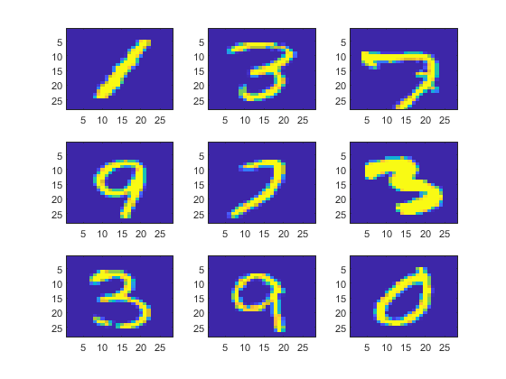
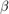
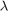
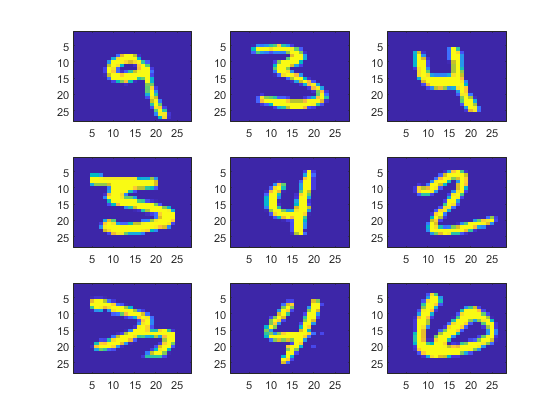
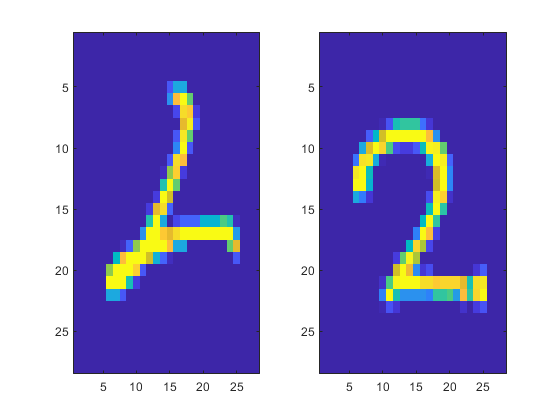
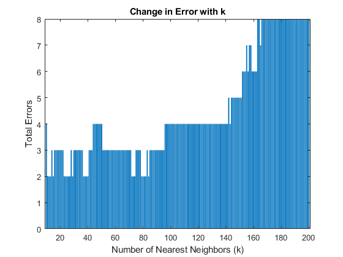
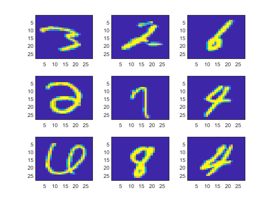

Exercise 7: Image Recognition
Submitted By: Prasannjeet Singh
Contents
Loading the files.
The raw images and labels formats are loaded into MATLAB using the following functions:
- loadMNISTImages(), and
- loadMNISTLabels
These methods can be found in this folder, which were developed by the Stanford university and borrowed from This Link. Apart from this, no new functions were developed to carry out the classification below. I have used all the previously implemented functions from Assignment 2.
X = ExTwoFunctions.loadMNISTImages('Data/train-images.idx3-ubyte')'; y = ExTwoFunctions.loadMNISTLabels('Data/train-labels.idx1-ubyte'); testImages = ExTwoFunctions.loadMNISTImages('Data/t10k-images.idx3-ubyte')'; testLabels = ExTwoFunctions.loadMNISTLabels('Data/t10k-labels.idx1-ubyte');
Training a subset of data
We run our logistic regression on a random subset, as training all the 60,000 images takes more than 15 minutes. However, the value below can be changed to train more or less or all the images. Nevertheless, I have trained all 60,000 images before and discussed the results as well.
subset = 200; % Change this line
X(:,end+1) = y;
X = X(randperm(size(X,1)),:);
X = X(1:subset,:);
y = X(:,end); X(:,end) = [];
About the data format of the imported images:
- The raw data when initially loaded was a matrix of 784 rows and 60,000 columns. Each column representing one image.
- In this case, all 784 pixels of each image were stored in a straight line array, which should be converted to a 28x28 matrix and transposed if we want to view the image.
- Below we will try to print 9 randomly selected images and their labels to make sure everything is working nice and smooth.
luckyIdx = randperm(size(X,1),9); printX = X([luckyIdx],:); printY = vec2mat(y([luckyIdx]),3) hFig = figure(1); for i = 1:9 subplot(3,3,i); imagesc(vec2mat(printX(i,:),28)'); end snapnow; close(hFig);
printY =
1 3 7
9 7 3
3 9 0
 Using Logistic Regression
- This question is a classical example of multiclass logistic regression, and we will try to solve it using the concepts from the logistic regression Lecture 4.
- After we took the transpose of the imported data, the matrix X now contains 60,000 rows and 784 columns, each row representing one image.
- As each column represents each pixel value of the image, these pixels will be considered as features of the image. Therefore, now each image has a total of 784 features and subsequently, the  vector will contain 785 elements including one intercept element, just like the logistic classification we did in previous problems.
- We will also be using some regularization (Lecture 5) to improve the results.
- The data will also be trained without regularization. In this case, the value of  will be assigned 0.
- Logistic regression will be carried out by the Functional Minimization Unconstrained function (fminunc()) from Lecture 4.
- The supporting function for fminunc() was already developed in Exercise 9 (costFunctionFminuncReg()) and the same will be used here. It also supports regularization.
% Setting up options for fminunc() options = optimset('GradObj', 'on', 'MaxIter', 1000,'Display','off'); % Defining the value of lambda for regularization lambda = 1; % The initial beta will be a vector of zeros, one more than total number of % features, to accommodate the ones vector (or the intercept). b = zeros(size(X,2)+1,1); % Performing logistic regression below for a total of 9 times. As it is a % multiclass logstic regression, each loop will consider the current value % (i) as the correct solution and all other values as the wrong solution. clearvars beta; for i = 0:9 % The line below converts the solution vector (which ranges from 0 to % 9) to a binary vector, with current 'i' value as 1, and others as 0. yCur = y == i; % Storing the beta values for each loop in each column [beta(:,i+1), ~, ~, ~] = fminunc(@(beta) (ExTwoFunctions.costFunctionFminuncReg(beta, X, yCur, lambda)), b, options); end
Testing the Logistic Regression
As we are only training a subset of the data above, I have already performed the regression three times, once each with lambda equal to 0,1 and 2 (by training all the 60,000 images). The resultant beta values were stored in this folder, and we can see the results below:
load Data/bValues; bValue{4} = beta; % For the current run of logistic regression X = [ones(size(testImages,1),1) testImages]; y = testLabels; % Saved the testing images and labels in X and y, respectively
Testing Process
- Let us conside sigmoid(X*beta) as Q
- Q gives us a matrix with each column containing solution for one iteration. That is, column 1 will containg the solution where '0' was condiered as true and all other numbers were considered false, and so on.
- Each row of Q contains the probability of the image to be '0', '1', '2', and so on respectively.
- We will sort the Q matrix in each row to get the highest probability answer in the first column. However, to make sure we know which solution it represents, we will club the solutions values (0,1,2,etc) with each probability value by taking help of complex numbers. So, in A + iB, a will represent the probability, and B will represent the solution.
- After the matrix is sorted based on the probability (A), the imaginary values (B) will simply be extracted, and it will be the solution.
- This solution will be cross-checked with the actual solution provided, to find out total number of errors.
for i = 1:length(bValue) beta = bValue{i}; allSolution = sort((ExTwoFunctions.sigmoid(X*beta) + 1i * repmat([0:9],size(ExTwoFunctions.sigmoid(X*beta),1),1)),2,'descend','ComparisonMethod','real'); allSolution = imag(allSolution(:,1)); error(i) = sum(allSolution(:,1) ~= y); end % Now displaying the results: for i = 1:3 fprintf(strcat('Total Error when lambda = ',32,int2str(i-1),':',32,int2str(error(i)),'\r\n')); fprintf(strcat('Accuracy:',32,num2str(100-error(i)*100/size(X,1)),'%%','\r\n')); end % Displaying the results of the curren trun of regression (with subset of % data) if length(bValue) == 4 fprintf(strcat('Total Error for the current run:',32,int2str(error(4)),'\r\n')); fprintf(strcat('Accuracy:',32,num2str(100-error(4)*100/size(X,1)),'%%','\r\n')); end
Total Error when lambda = 0: 824 Accuracy: 91.76% Total Error when lambda = 1: 802 Accuracy: 91.98% Total Error when lambda = 2: 806 Accuracy: 91.94% Total Error for the current run: 1955 Accuracy: 80.45%
This tells us that Logistic Regression with regularization ( = 1) gives us the best result with accuracy of almost 92%. Note that total error for the current run will be certainly be more than the others, as we are taining only a subset of the data.
Observation
We can also observe some of the images that couldn't be identified correctly (for = 2, or the current iteration):
X(:,1) = []; % Removing the ones vector fltr = allSolution ~= y; X = X(fltr,:); y = y(fltr); allSolution = allSolution(fltr); luckyIdx = randperm(size(X,1),9); printX = X([luckyIdx],:); correctAnswer = vec2mat(y([luckyIdx]),3) calculatedAnswer = vec2mat(allSolution([luckyIdx]),3) hFig = figure(2); for i = 1:9 subplot(3,3,i); imagesc(vec2mat(printX(i,:),28)'); end snapnow; close(hFig);
correctAnswer =
9 3 4
3 4 2
3 4 6
calculatedAnswer =
5 5 9
5 9 8
2 9 2
 As these images are generated randomly every time, one common thing can be observed is that most of the above images which were classified wrongly, are a bit different from the original patterns.
k-Nearest Neighbors
Training all the 60,000 points and testing the first 100 test images. The k value was assumed to be 15, which can be changed if desired.
clear temp finalClass; X = ExTwoFunctions.loadMNISTImages('Data/train-images.idx3-ubyte')'; y = ExTwoFunctions.loadMNISTLabels('Data/train-labels.idx1-ubyte'); % Testing only first 100 data testX = testImages(1:100,:); testY = testLabels(1:100,:); k = 15; % Change here % Performing k-Means for i = 1:size(testX,1) temp = sortrows([(sum(((X-testX(i,:)).^2),2).^(1/2)) y],1); finalClass(i,:) = [i mode(temp(1:k,2))]; end finalClass(:,3) = finalClass(:,2) ~= testY; totalErrors = sum(finalClass(:,3))
totalErrors =
2
Therefore, out of 100, only 2 were predicted wrongly, which is a 98% accuracy. However, since we haven't tested all the test data, we cannot conclusively say that the accuracy is 98%.
k-NN Observation
Let us see the two images that were classified wrongely:
calcSol = finalClass(:,2); fltr = finalClass(:,3) == 1; testX = testX(fltr,:); correctAnswer = testY(fltr)' calculatedAnswer = calcSol(fltr)' hFig = figure(3); for i = 1:2 subplot(1,2,i); imagesc(vec2mat(testX(i,:),28)'); end snapnow; close(hFig);
correctAnswer =
2 2
calculatedAnswer =
1 7
 It can be clearly observed that the first image is distorted and is hard to classify.
Some more data
I also performed the above testing with k values ranging from 10 to 200 (for the first 100 test images). Plotting the k values versus error below:
load Data/knn.mat; hFig = figure(4); bar(errorRate(10:end,1), errorRate(10:end,2)); title('Change in Error with k'); xlabel('Number of Nearest Neighbors (k)'); ylabel('Total Errors'); snapnow; close(hFig);
- This trend follows the trend we got in the first assignment, where drastic increase in the value of k decreases the efficiency of the model.
- In the above graph, there are many values of k where we get the minimum error.
- One of the values where we get the minimum error is k = 25.
- With k=25, I ran the k-NN on the complete test set using full training set. Total error received was only 391. However, since it takes around 1 hour, I haven't done it here in real time.
- With error on only 391 values out of 10,000, the total accuracy came out to be a whopping 96.9 percent, which is way more than the best logistic regression model that I calculated above.
Randomly looking at 9 of the images that were misclassified:
fltr = finalClass(:,3) == 1; X = testImages; y = testLabels; allSolution = finalClass(:,2); X = X(fltr,:); y = y(fltr); allSolution = allSolution(fltr); luckyIdx = randperm(size(X,1),9); printX = X([luckyIdx],:); correctAnswer = vec2mat(y([luckyIdx]),3) calculatedAnswer = vec2mat(allSolution([luckyIdx]),3) hFig = figure(5); for i = 1:9 subplot(3,3,i); imagesc(vec2mat(printX(i,:),28)'); end snapnow; close(hFig);
correctAnswer =
3 2 6
2 7 4
6 8 4
calculatedAnswer =
7 1 1
0 9 9
0 9 6
 By observation, we can say many of these handwritten images are very obscure, and in some cases, it might also be misclassified by human eyes. These images can definitely be considered as outliers, but the same cannot be said for the results we got for logistic regression.
In conclusion, we can say that k-NN algorithm, with k=25 is a better algorithm to classify handwritten images in this particular case, with an accuracy of almost 97%, compared to 92% which we got from logistic regression.